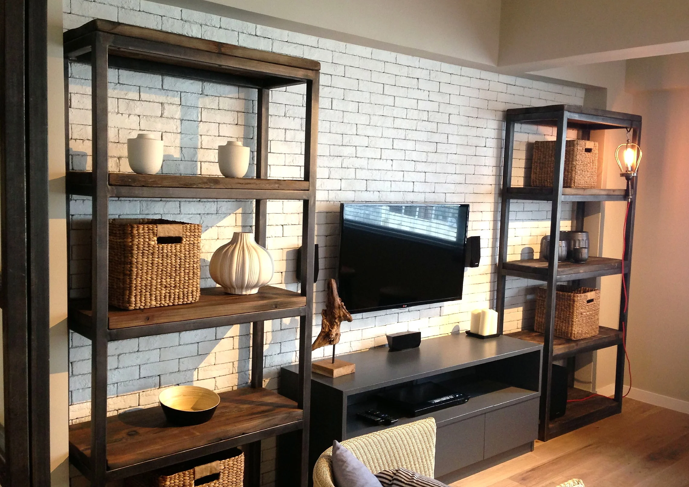
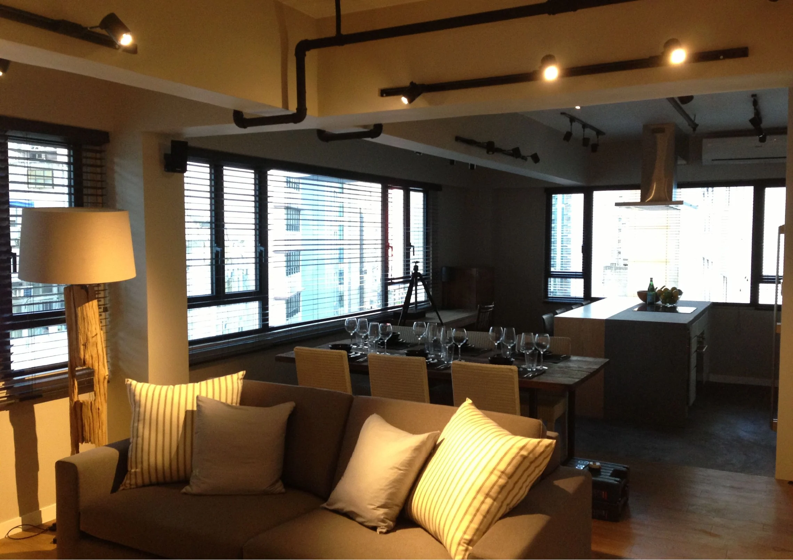
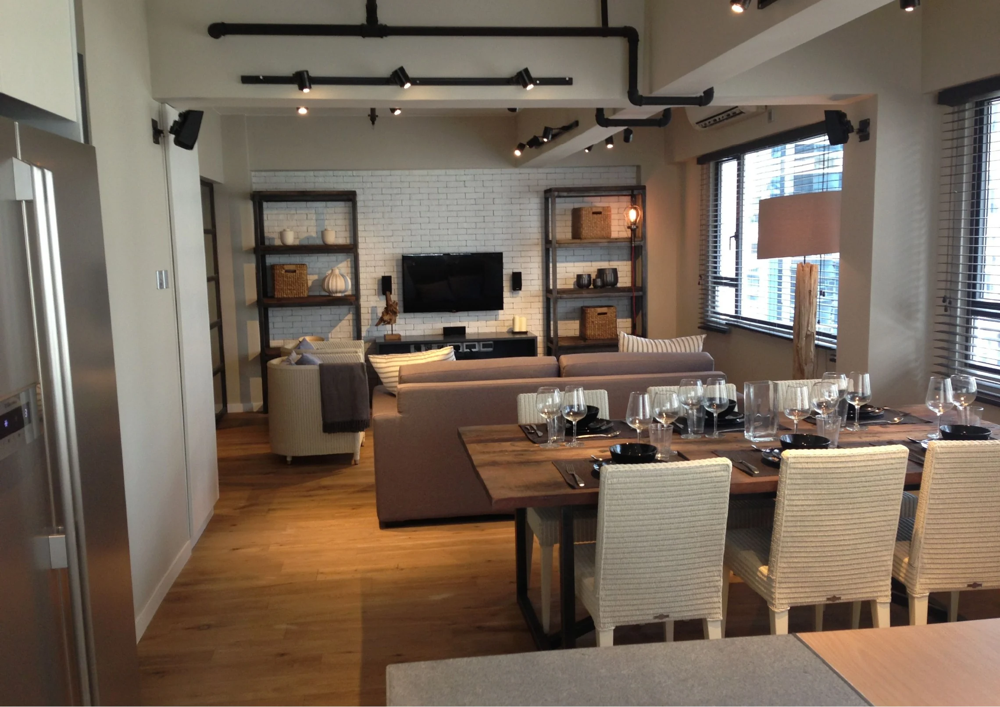
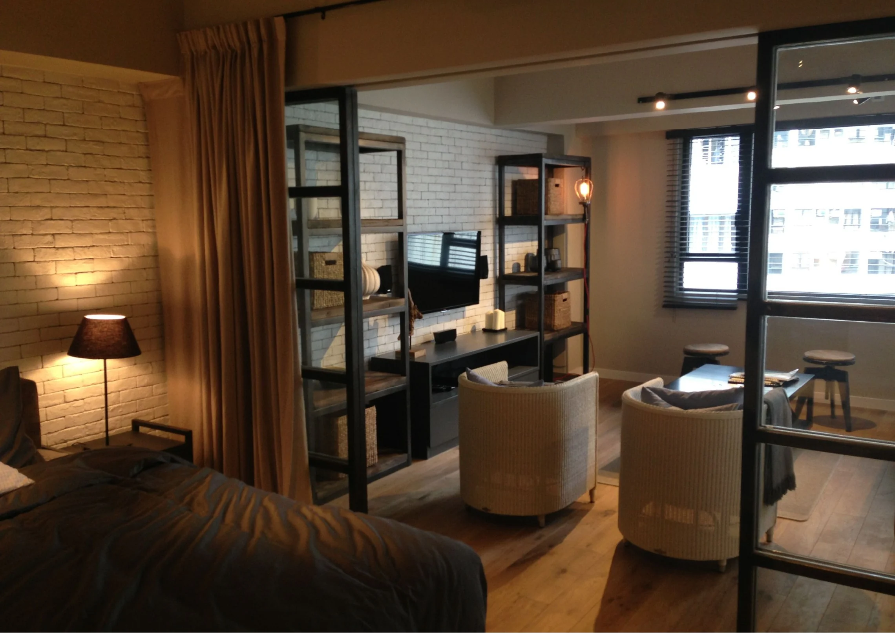

Material balance
Warm timber flooring and woven accents sit alongside a pale brick-effect wall, with dark metal-framed shelving adding contrast.
A Central home recorded across living and dining spaces. Timber flooring, a pale brick-effect feature wall and dark-framed shelving bring distinct textures to the shared room without closing it in.

Selected views from the supplied Central residential project record.



Warm timber flooring and woven accents sit alongside a pale brick-effect wall, with dark metal-framed shelving adding contrast.
The photographs show living and dining arranged as a connected sequence. Open display storage defines the media wall while keeping the room visually permeable.
The supplied source record is photographic rather than a written client brief or contract schedule. This description is limited to visible finishes, furnishings and spaces; it does not imply an unrecorded scope or outcome.